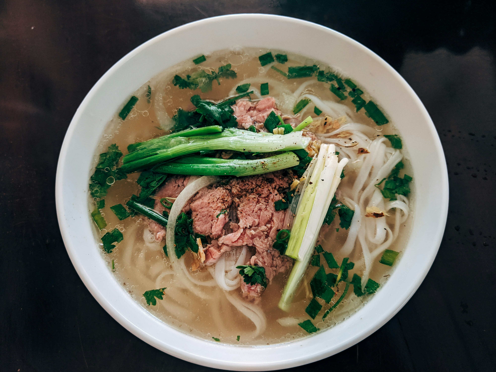

Pho
Home

Description
This is an image of a bowl of Vietnamese Pho. Pho (pronounced "fuh") is the national dish of Vietnam: a fragrant, savory noodle soup made with long-simmered bone broth, flat rice noodles, fresh herbs, and meat. To create its signature complex flavor, the broth is simmered slowly for hours with beef or chicken bones, charred ginger, onions, and a aromatic blend of spices like star anise, cinnamon, cloves, and coriander seeds. It is traditionally served piping hot and customized at the table by the diner, who can add bean sprouts, fresh basil, cilantro, culantro, a squeeze of lime juice, and a drizzle of sriracha or hoisin sauce to taste. Originally a street food from northern Vietnam, it has evolved into a beloved national dish and a global comfort food icon.
Ingredients
- 5 kilograms of beef rib
- 5 kilograms of beef bone
- 1 cup of coriander seeds
- 1 piece of cinnamon
- 10 pieces of star anise
- 1 medium clump of rock sugar
- 1 teaspoon of cloves
- 2 black cardamom
- 2 pho cubes
- 2 cups of fish sauce
- 1 tablespoon of mushroom seasoning
- 2 tablespoon of salt
- 3 medium onions
- 7 shalots
- 1 clump of ginger
Steps
- Place the bones and beef chuck in large stockpot and add water to cover. Bring to a boil and boil for 5 minutes. Drain in a colander and thoroughly clean the stockpot. This process removes any impurities/scum and will give you a much cleaner broth.
- Meanwhile, char your ginger and onions. Use tongs to hold the ginger and onions (one at a time) over an open flame, or place each directly on a gas burner. Turn until they’re lightly blackened and fragrant, about 5 minutes. Rinse away all the blackened skins.
- Add water (5 quarts/4.75 L, or more/less if you've scaled the recipe up or down) to the stockpot and bring to a boil. Transfer the bones and meat back to the pot, along with the charred/cleaned ginger and onions. Add the scallions, fish sauce and sugar. Reduce the heat to low, and simmer until the beef chuck is tender, about 40 minutes. Skim the surface often to remove any foam and fat.
- Remove one piece of the chuck and transfer to a bowl of ice water to stop the cooking process. Then transfer this piece of beef to a container and refrigerate (you will slice this to serve with your pho later. If you were to leave it in the pot, it would be too dry to eat). Leave the other piece of chuck in the pot to flavor the broth.
- Now toast the spices (star anise, cloves, cinnamon stick, cardamom, fennel seeds, and coriander seeds) in a dry pan over medium low heat for about 3 minutes, until fragrant. Use kitchen string to tie up the spices in a piece of cheesecloth, and add it to the broth.
- Cover the pot and continue simmering for another 4 hours. Add the salt and continue to simmer, skimming as necessary, until you're ready to assemble the rest of the dish. Taste the broth and adjust seasoning by adding more salt, sugar, and/or fish sauce as needed.
- To serve, boil the noodles according to package instructions. Add to a bowl. Place a few slices of the beef chuck and the raw sirloin on the noodles. Bring the broth to a rolling boil and ladle it into each bowl. The hot broth will cook the beef. Garnish with your toppings, and be sure to squeeze a lot of fresh lime juice over the top!